감정평가사-1차-1교시 (2019-03-02 기출문제)
1과목: 민법(총칙,물권)
1. 민법의 법원(法源)에 관한 설명으로 옳은 것은? (다툼이 있으면 판례에 따름)
- 관습법에 앞서 적용되는 법률이란 국회에서 제정된 법률만을 말한다.
- 관습법에 의한 분묘기지권은 더 이상 인정되지 않는다.
- 판례는 관습법과 사실인 관습을 구별하지 않는다.
- 상급법원 재판에서의 판단은 해당 사건에 관하여 하급심을 기속한다.
- 헌법재판소의 결정은 그것이 민사에 관한 것이라도 민법의 법원으로 되지 않는다.
(정답률: 알수없음)

2. 민법상 권리에 관한 설명으로 옳지 않은 것은?
- 조건부권리는 기대권에 속한다.
- 채권과 청구권은 동일한 개념이다.
- 지상권자의 지료증감청구권은 형성권이다.
- 보증인의 최고ㆍ검색의 항변권은 연기적 항변권이다.
- 주된 권리가 시효로 소멸하면 종된 권리도 소멸한다.
(정답률: 알수없음)
3. 신의칙과 권리남용에 관한 설명으로 옳지 않은 것은? (다툼이 있으면 판례에 따름)
- 신의칙에 반하는 것인지 여부는 당사자의 주장이 없더라도 법원이 직권으로 판단할 수 있다.
- 신의칙에 기한 사정변경의 원칙에 의하여 계약해제권이 발생할 수 있다.
- 강행법규에 반한다는 사정을 알면서 법률행위를 한 자가 강행법규 위반을 이유로 그 법률행위의 무효를 주장하는 것은 특별한 사정이 없는 한 신의칙에 위배되지 않는다.
- 권리남용금지의 원칙은 본래적 의미의 권리뿐만 아니라 법인격의 남용에도 적용된다.
- 국민을 보호할 의무가 있는 국가가 국민에 대하여 부담하는 손해배상채무의 소멸시효 완성을 주장하는 것은 원칙적으로 신의칙에 반한다.
(정답률: 알수없음)
4. 18세인 미성년자가 단독으로 유효하게 할 수 있는 행위가 아닌 것은?
- 자신이 제한행위능력자임을 이유로 취소할 수 있는 법률행위의 취소
- 부모로부터 받은 한 달분의 용돈을 친구에게 빌려주는 행위
- 자전거를 부담부로 증여받는 행위
- 타인의 대리인으로서 토지를 매도하는 행위
- 부모의 동의를 받아 법률상 혼인을 한 후, 주택을 구입하는 행위
(정답률: 알수없음)
5. 권리능력에 관한 설명으로 옳지 않은 것은? (다툼이 있으면 판례에 따름)
- 사람은 생존한 동안 권리와 의무의 주체가 된다.
- 사람이 권리능력을 상실하는 사유로는 사망이 유일하다.
- 수인(數人)이 동일한 위난으로 사망한 경우, 그들은 동시에 사망한 것으로 추정되므로 이 추정이 깨어지지 않는 한 그들 사이에는 상속이 일어나지 않는다.
- 의사의 과실로 태아가 사망한 경우, 태아의 부모는 태아의 의사에 대한 손해배상채권을 상속하여 행사할 수 있다.
- 인정사망에 의한 가족관계등록부에의 기재는 그 기재된 사망일에 사망한 것으로 추정하는 효력을 가진다.
(정답률: 알수없음)
6. 어부 甲은 2015년 7월 1일 조업 중 태풍으로 인하여 선박이 침몰하여 실종된 후 2017년 10월 1일 실종선고를 받았다. 이 사안에 관한 설명으로 옳은 것은? (다툼이 있으면 판례에 따름)
- 위 실종선고를 위해 필요한 실종기간은 1년이다.
- 甲은 2017년 10월 1일에 사망한 것으로 간주된다.
- 1순위 상속인이 있더라도 2순위 상속인은 위 실종선고를 신청할 수 있다.
- 甲이 극적으로 살아서 종래의 주소지로 돌아오면 위 실종선고는 자동으로 취소된다.
- 甲의 생환으로 실종선고가 취소되면 甲의 상속인은 악의인 경우에만 상속재산을 甲에게 반환할 의무가 있다.
(정답률: 알수없음)
7. 민법상 법인에 관한 설명으로 옳은 것을 모두 고른 것은? (다툼이 있으면 판례에 따름)
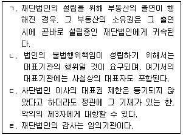
- ㄱ, ㄴ
- ㄱ, ㄷ
- ㄴ, ㄷ
- ㄴ, ㄹ
- ㄷ, ㄹ
(정답률: 알수없음)
8. 법인 아닌 사단에 관한 설명으로 옳지 않은 것은? (다툼이 있으면 판례에 따름)
- 법인 아닌 사단의 사원이 집합체로서 물건을 소유할 때에는 총유로 한다.
- 법인 아닌 사단이 타인간의 금전채무를 보증하는 행위는 총유물의 관리 및 처분행위라고 볼 수 없다.
- 법인 아닌 사단의 총회 결의에 대해서는 민법상 사단법인에 대한 규정이 유추적용될 수 있다.
- 정관이나 규약에 정함이 없는 이상 사원총회의 결의를 거치지 않은 총유물의 관리 및 처분행위는 무효이다.
- 법인 아닌 사단은 부동산 등기능력이 없다.
(정답률: 알수없음)
9. 물건에 관한 설명으로 옳지 않은 것은? (다툼이 있으면 판례에 따름)
- 관리할 수 있는 자연력은 동산이다.
- 주물과 종물의 법률적 운명을 달리하는 약정은 유효하다.
- 권원 없이 타인의 토지에서 경작한 농작물이 성숙하여 독립한 물건으로 인정되면, 그 소유권은 명인방법을 갖추지 않아도 경작자에게 있다.
- 특별한 사정이 없는 한, 주유기는 주유소 건물의 종물이다.
- 여러 개의 물건으로 이루어진 집합물은 원칙적으로 하나의 물건으로 인정된다.
(정답률: 알수없음)
10. 선량한 풍속 기타 사회질서에 위반한다는 이유로 무효 또는 일부무효로 되는 법률행위가 아닌 것은? (다툼이 있으면 판례에 따름)
- 어떤 일이 있어도 이혼하지 않겠다는 약정
- 과도한 위약벌의 약정
- 민사사건에 관하여 변호사와 체결한 성공보수약정
- 부첩(夫妾)관계의 종료를 해제조건으로 하는 증여계약
- 보험사고를 가장하여 보험금을 취득할 목적으로 체결한 생명보험계약
(정답률: 알수없음)
11. 통정허위표시에 관한 설명으로 옳지 않은 것은? (다툼이 있으면 판례에 따름)
- 상대방과 통정한 허위의 의사표시는 무효이지만, 이러한 무효는 과실로 인하여 허위표시라는 사실을 인식하지 못한 제3자에게 대항할 수 없다.
- 강제집행을 면할 목적으로 부동산에 허위의 근저당권설정등기를 경료하는 행위는 민법 제103조의 선량한 풍속 기타 사회질서에 위반한 사항을 내용으로 하는 법률행위이다.
- 선의의 제3자에 대해서는 통정허위표시의 당사자뿐만 아니라 그 누구도 통정허위표시의 무효로 대항할 수 없다.
- 부동산의 가장양수인으로부터 해당 부동산을 취득한 제3자 A가 악의이고, 그로부터 그 부동산을 전득한 B가 선의라면 통정허위표시의 무효로써 B에게 대항할 수 없다.
- 당사자들이 실제로는 증여계약을 체결하면서 매매계약인 것처럼 통정허위표시를 하였다면 은닉행위인 증여계약은 유효할 수 있다.
(정답률: 알수없음)
12. 甲은 자신의 점포를 32만 달러에 팔기로 의욕하였지만, 미국인 乙에게 실수로 매매대금을 23만 달러로 표시하여 이 가격으로 계약이 체결되었다. 이 사안에 관한 설명으로 옳은 것은?
- 위 매매계약은 甲의 진의 아닌 의사표시로서 일단 유효하지만, 甲이 乙의 악의 또는 과실을 입증하여 무효를 주장할 수 있다.
- 甲과 乙은 모두 통정허위표시에 따른 무효를 주장할 수 있다.
- 甲은 오표시무해의 원칙을 주장하여 '32만 달러'를 대금으로 하는 매매계약의 성립을 주장할 수 있다.
- 甲은 착오를 주장하여 위 매매계약을 취소할 수 있지만, 乙이 甲의 중대한 과실을 증명하면 취소할 수 없다.
- 위 매매계약은 불합의에 해당하므로, 매매계약 자체가 성립하지 않는다.
(정답률: 알수없음)
13. 의사표시의 효력발생에 관한 설명으로 옳지 않은 것은? (다툼이 있으면 판례에 따름)
- 의사표시의 도달이란 상대방이 그 내용을 안 것을 의미한다.
- 의사표시의 부도달로 인한 불이익은 표의자가 부담한다.
- 도달주의의 원칙을 정하는 민법 제111조는 임의규정이므로 당사자는 약정으로 의사표시의 효력발생시기를 달리 정할 수 있다.
- 매매계약 승낙의 의사표시를 발신한 후 승낙자가 사망하였다고 하더라도 그 의사표시가 청약자에게 정상적으로 도달하였다면 매매계약은 유효하게 성립한다.
- 제한능력자는 원칙적으로 의사표시의 수령무능력자이다.
(정답률: 알수없음)
14. 대리에 관한 설명으로 옳지 않은 것은? (다툼이 있으면 판례에 따름)
- 불법행위에는 대리의 법리가 적용되지 않는다.
- 대리인이 자신의 이익을 도모하기 위하여 대리권을 남용한 경우는 무권대리에 해당한다.
- 대리인의 대리행위가 공서양속에 반하는 경우, 본인이 그 사정을 몰랐다고 하더라도 그 행위는 무효이다.
- 대리인이 상대방에게 사기ㆍ강박을 하였다면 상대방은 본인이 그에 대해 선의ㆍ무과실이라 하더라도 대리인과 행한 법률행위를 취소할 수 있다.
- 복대리인은 본인의 대리인이다.
(정답률: 알수없음)
15. 甲으로부터 대리권을 수여받지 못한 乙은 甲의 대리인이라고 사칭하여 甲의 토지에 대해 丙과 매매계약을 체결하였다. 甲, 乙, 丙 사이의 법률관계에 관한 설명으로 옳은 것은? (다툼이 있으면 판례에 따름)
- 甲은 乙의 대리행위를 추인할 수 있으며, 그 추인은 乙이 아닌 丙에게 하여야 효력이 있다.
- 甲이 추인하지 않고 乙이 자신의 대리권을 증명하지 못한 경우, 乙은 자신의 선택에 좇아 선의ㆍ무과실인 丙에게 계약의 이행이나 손해배상 책임을 진다.
- 甲이 추인하면서 특별한 의사표시를 하지 않았다면 乙의 대리행위는 추인한 때로부터 甲에게 효력이 생긴다.
- 丙이 계약당시에 乙에게 대리권이 없다는 사실을 알았다면 철회권을 행사할 수 없다.
- 丙은 甲에게 상당한 기간을 정하여 추인 여부의 확답을 최고할 수 있으며, 甲이 그 기간 내에 확답을 발하지 아니하면 甲이 추인한 것으로 본다.
(정답률: 알수없음)
16. 법률행위의 취소에 관한 설명으로 옳지 않은 것은?
- 착오로 인하여 취소할 수 있는 법률행위를 한 자의 포괄승계인은 그 법률행위를 취소할 수 있다.
- 미성년자가 동의없이 단독으로 행한 법률행위를 그 법정대리인이 추인하는 경우, 그 추인은 취소의 원인이 소멸한 후에 하여야만 효력이 있다.
- 제한능력자가 제한능력을 이유로 법률행위를 취소한 경우, 그 행위로 인하여 받은 이익이 현존하는 한도에서 상환할 책임이 있다.
- 취소할 수 있는 법률행위를 추인한 후에는 이를 다시 취소하지 못한다.
- 취소권은 추인할 수 있는 날로부터 3년 내에, 법률행위를 한 날로부터 10년 내에 행사하여야 한다.
(정답률: 알수없음)
17. 조건과 기한에 관한 설명으로 옳지 않은 것은?
- 조건성취의 효력은 당사자의 의사표시로 소급하게 할 수 없다.
- 조건이 법률행위 당시에 이미 성취할 수 없는 것일 경우에는 그 조건이 해제조건이면 조건없는 법률행위로 한다.
- 조건의 성취가 미정인 권리는 일반규정에 의하여 담보로 할 수 있다.
- 당사자의 특약이나 법률행위의 성질상 분명하지 않으면 기한은 채무자의 이익을 위한 것으로 추정한다.
- 기한의 이익은 포기할 수 있지만, 이로 인해 상대방의 이익을 해하지 못한다.
(정답률: 알수없음)
18. 기간에 관한 설명으로 옳지 않은 것은? (단, 기간 말일이 토요일 또는 공휴일인 경우는 고려하지 않음)
- 기간을 시, 분, 초로 정한 때에는 즉시로부터 기산한다.
- 채무의 이행기를 일, 주, 월 또는 연으로 정한 때에는 기간이 오전 0시로부터 시작하는 경우가 아닌 한, 기간의 초일을 산입하지 않는다.
- 기간을 일, 주, 월 또는 연으로 정한 때에는 기간말일의 종료로 기간이 만료한다.
- 연령을 계산하는 경우에는 출생일을 산입한다.
- 주, 월 또는 연의 처음부터 기간을 기산하지 아니한 때에는 최후의 주, 월 또는 연에서 그 기산일에 해당한 날로 기간이 만료한다.
(정답률: 알수없음)
19. 소멸시효와 제척기간에 관한 설명으로 옳지 않은 것은? (다툼이 있으면 판례에 따름)
- 소멸시효에 의한 권리소멸은 기산일에 소급하여 효력이 있으나, 제척기간에 의한 권리소멸은 장래에 향하여 효력이 있다.
- 소멸시효의 이익은 미리 포기가 가능하나, 제척기간에는 포기가 인정되지 않는다.
- 제척기간의 경과는 법원의 직권조사사항이지만, 소멸시효의 완성은 직권조사사항이 아니다.
- 소멸시효에는 중단이 인정되고 있으나, 제척기간에는 중단이 인정되지 않는다.
- 소멸시효의 정지에 관해서는 민법에 명문의 규정이 있으나, 제척기간의 정지에 관해서는 민법에 명문의 규정이 없다.
(정답률: 알수없음)
20. 소멸시효의 기산점에 관한 설명으로 옳지 않은 것은? (다툼이 있으면 판례에 따름)
- 소멸시효는 권리를 행사할 수 있는 때로부터 진행하며, 이때 '권리를 행사할 수 있다'는 것은 권리를 행사함에 있어 원칙적으로 법률상 장애가 없는 것을 가리킨다.
- 부작위를 목적으로 하는 채권의 소멸시효는 위반행위를 한 때로부터 진행한다.
- 정지조건부권리의 경우에는 조건 미성취의 동안은 권리를 행사할 수 없는 것이어서 소멸시효가 진행되지 않는다.
- 소유권이전등기의무의 이행불능으로 인한 전보배상청구권의 소멸시효는 이전등기의무가 이행불능이 된 때부터 진행된다.
- 본래의 소멸시효 기산일과 당사자가 주장하는 기산일이 서로 다른 경우에는 법원은 본래의 소멸시효 기산일을 기준으로 소멸시효를 계산하여야 한다.
(정답률: 알수없음)
21. 물권법정주의에 관한 설명으로 옳은 것은? (다툼이 있으면 판례에 따름)
- 물권은 명령이나 규칙에 의해서도 창설될 수 있다.
- 민법은 관습법에 의한 물권의 성립을 부정한다.
- 물권법정주의에 관한 규정은 강행규정이며, 이에 위반하는 법률행위는 무효이다.
- 대법원은 사인(私人)의 토지에 대한 관습상의 통행권을 인정하고 있다.
- 미등기 무허가건물의 양수인은 그 소유권이전등기를 경료하지 않더라도 그 건물에 관하여 소유권에 준하는 관습상의 물권을 가진다.
(정답률: 알수없음)
22. 물권적 청구권에 관한 설명으로 옳은 것을 모두 고른 것은? (다툼이 있으면 판례에 따름)
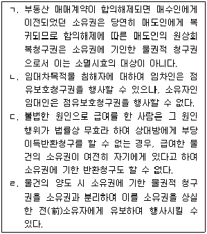
- ㄱ, ㄴ
- ㄱ, ㄷ
- ㄴ, ㄷ
- ㄴ, ㄹ
- ㄷ, ㄹ
(정답률: 알수없음)
23. 부동산의 물권변동을 위해 등기가 필요한 것은? (다툼이 있으면 판례에 따름)
- 건물의 신축에 의한 소유권의 취득
- 상속에 의한 토지 소유권의 취득
- 피담보채권의 소멸에 의한 저당권의 소멸
- 관습법에 따른 법정지상권의 취득
- 점유취득시효에 의한 토지 소유권의 취득
(정답률: 알수없음)
24. 무효등기의 유용에 관한 설명으로 옳지 않은 것은? (다툼이 있으면 판례에 따름)
- 무효등기의 유용에 관한 합의 내지 추인은 묵시적으로도 이루어질 수 있다.
- 실질관계의 소멸로 무효로 된 등기의 유용은 그 등기를 유용하기로 하는 합의가 이루어지기 전에 등기상 이해관계가 있는 제3자가 생기지 않은 경우에는 허용된다.
- 유용할 수 있는 등기에는 가등기도 포함된다.
- 기존건물이 전부 멸실된 후 그곳에 새로이 건축한 건물의 물권변동에 관한 등기를 위해 멸실된 건물의 등기를 유용할 수 있다.
- 무효인 등기를 유용하기로 한 약정을 하더라도, 무효의 등기가 있은 때로 소급하여 유효한 등기로 전환될 수 없다.
(정답률: 알수없음)
25. 등기의 추정력에 관한 설명으로 옳은 것을 모두 고른 것은? (다툼이 있으면 판례에 따름)
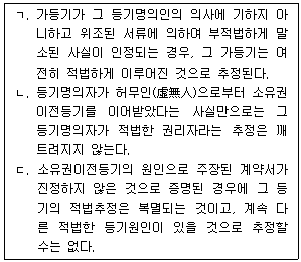
- ㄱ
- ㄴ
- ㄷ
- ㄱ, ㄷ
- ㄱ, ㄴ, ㄷ
(정답률: 알수없음)
26. 선의취득에 관한 설명으로 옳지 않은 것은? (다툼이 있으면 판례에 따름)
- 등록에 의하여 소유권이 공시되는 자동차는 동산이라 하더라도 선의취득의 대상이 되지 않는다.
- 수분양자로서의 지위를 내용으로 하는 연립주택의 입주권은 선의취득의 대상이 될 수 없다.
- 채무자 이외의 자의 소유에 속하는 동산의 경매절차에서 그 동산을 경락받아 경락대금을 납부하고 이를 인도받은 경락인은 특별한 사정이 없는 한 소유권을 선의취득할 수 있다.
- 선의취득이 인정되기 위해서는 양도인이 무권리자인 점을 제외하면 아무런 흠이 없는 거래행위이어야 한다.
- 현실인도뿐만 아니라 점유개정의 방법으로 양수인이 동산의 점유를 취득한 경우에도 선의취득이 인정된다.
(정답률: 알수없음)
27. 물권의 소멸에 관한 설명으로 옳지 않은 것은? (다툼이 있으면 판례에 따름)
- 물건이 멸실되더라도 물건의 가치적 변형물이 남아 있는 경우에는 담보물권은 그 가치적 변형물에 미친다.
- 지역권은 소멸시효의 대상이 될 수 있다.
- 부동산에 대한 합유지분의 포기는 형성권의 행사이므로 등기하지 않더라도 포기의 효력이 생긴다.
- 점유권과 본권이 동일인에게 귀속하더라도 점유권은 소멸하지 않는다.
- 근저당권자가 그 저당물의 소유권을 취득하면 그 근저당권은 원칙적으로 혼동에 의하여 소멸하지만, 그 뒤 그 소유권 취득이 무효인 것이 밝혀지면 소멸하였던 근저당권은 당연히 부활한다.
(정답률: 알수없음)
28. 다음 중 간접점유자는?
- 전세권자에게 주택을 인도한 전세권설정자
- 장난감을 갖고 노는 초등학생
- 길거리에 지갑을 잃어버린 행인
- 타인으로부터 자전거를 훔친 자
- 주인을 대신하여 가게를 보고 있는 종업원
(정답률: 알수없음)
29. 점유권의 효력에 관한 설명으로 옳지 않은 것은? (다툼이 있으면 판례에 따름)
- 점유자가 점유물에 대하여 행사하는 권리는 적법하게 보유한 것으로 추정된다.
- 점유자가 점유의 침탈을 당한 때에는 그 물건의 반환 및 손해의 배상을 청구할 수 있다.
- 점유물반환청구권은 점유의 침탈을 당한 날로부터 3년 내에 행사하여야 한다.
- 점유가 점유침탈 이외의 방법으로 침해되고 있는 경우에 점유자는 그 방해의 제거 및 손해의 배상을 청구할 수 있다.
- 점유권에 기인한 소와 본권에 기인한 소는 서로 영향을 미치지 아니한다.
(정답률: 알수없음)
30. 점유자와 회복자의 관계에 관한 설명으로 옳지 않은 것은? (다툼이 있으면 판례에 따름)
- 과실을 수취한 자가 선의의 점유자로 보호되기 위해서는 과실수취권을 포함하는 권원이 있다고 오신할만한 정당한 근거가 있어야 한다.
- 폭력 또는 은비에 의한 점유자는 수취한 과실을 반환하여야 한다.
- 점유물이 점유자의 책임있는 사유로 인하여 멸실 또는 훼손한 때에는 선의의 자주점유자라도 그 손해의 전부를 배상하여야 한다.
- 악의의 점유자도 점유물을 반환할 때에는 회복자에 대하여 필요비의 상환을 청구할 수 있다.
- 선의의 점유자가 과실을 취득한 경우에는 통상의 필요비는 청구하지 못한다.
(정답률: 알수없음)
31. 취득시효에 관한 설명으로 옳지 않은 것은? (다툼이 있으면 판례에 따름)
- 비법인사단은 시효취득의 주체가 될 수 없다.
- 부동산의 소유자로 등기한 자가 10년간 소유의 의사로 평온, 공연하게 선의이며 과실없이 그 부동산을 점유한 때에는 소유권을 취득한다.
- 10년간 소유의 의사로 평온, 공연하게 동산을 점유한 자는 그 소유권을 취득한다.
- 부동산 점유취득시효가 완성되면 점유자는 원칙적으로 시효기간 만료 당시의 토지소유자에 대하여 소유권이전등기청구권을 취득하는데, 이는 채권적 청구권이다.
- 공유지분의 일부에 대해서도 시효취득이 가능하지만, 집합건물의 공용부분은 점유취득시효에 의한 소유권취득의 대상이 될 수 없다.
(정답률: 알수없음)
32. 민법상 공동소유에 관한 설명으로 옳지 않은 것은? (다툼이 있으면 판례에 따름)
- 합의에 의한 공유물 분할의 경우, 공유자는 다른 공유자가 취득한 물건에 대하여 그 지분의 비율로 매도인과 동일한 담보책임이 있다.
- 공유자는 그 지분을 처분할 수 있고 공유물 전부를 지분의 비율로 사용, 수익할 수 있다.
- 공유자는 다른 공유자의 동의 없이 공유물을 처분하거나 변경할 수 있다.
- 공유물의 관리에 관한 사항은 공유자의 지분의 과반수로써 결정한다.
- 토지공유자 사이에서는 그 지분의 비율로 공유물의 관리비용 기타 의무를 부담한다.
(정답률: 알수없음)
33. 2017년 8월경 甲은 乙소유의 X부동산을 매매대금을 일시에 지급하고 매수하면서 애인인 丙과의 명의신탁약정에 기초하여 乙로부터 丙으로 X부동산에 관한 소유권이전등기를 마쳤다. 이에 관한 설명으로 옳지 않은 것은? (다툼이 있으면 판례에 따름)
- 甲과 丙 사이의 명의신탁약정 및 그에 따른 丙 명의의 등기는 무효이다.
- 甲과 丙이 이후 혼인을 하게 된다면, 조세포탈 등이나 법령상의 제한을 회피할 목적이 없는 한, 위 등기는 甲과 丙이 혼인한 때로부터 유효하게 된다.
- 丙이 X부동산을 임의로 처분하였다 하더라도 특별한 사정이 없는 한, 乙이 丙의 처분행위로 인하여 손해를 입었다고 할 수는 없다.
- 甲은 乙에 대한 소유권이전등기청구권을 보전하기 위하여 乙을 대위하여 丙 명의의 등기말소를 청구할 수 있다.
- 丙으로부터 X부동산을 매수한 丁이 丙의 甲에 대한 배임행위에 적극 가담하였더라도, 丙과 丁 사이의 매매계약은 반사회적인 법률행위에 해당하지는 않는다.
(정답률: 알수없음)
34. 지상권에 관한 설명으로 옳지 않은 것은? (다툼이 있으면 판례에 따름)
- 지상권자는 그 권리의 존속기간 내에서 그 토지를 타인에게 임대할 수 있다.
- 구분지상권의 존속기간을 영구적인 것으로 약정하는 것은 허용된다.
- 지상권자가 2년 이상의 지료를 지급하지 아니하는 때에는 지상권설정자는 지상권의 소멸을 청구할 수 있다.
- 지료연체를 이유로 한 지상권소멸청구에 의해 지상권이 소멸하더라도 지상물매수청구권은 인정된다.
- 지상권 설정계약에서 지료의 지급에 대한 약정이 없더라도 지상권의 성립에는 영향이 없다.
(정답률: 알수없음)
35. 관습법상 법정지상권에 관한 설명으로 옳지 않은 것은? (다툼이 있으면 판례에 따름)
- 미등기건물에 대해서는 건물로서의 요건을 갖추었다 하더라도 관습법상 법정지상권이 인정되지 않는다.
- 대지와 건물의 소유자가 건물만을 매도하였으나 매수인이 그 건물의 소유를 위하여 매도인과 대지에 관한 임대차계약을 체결하였다면, 특별한 사정이 없는 한 위 매수인은 대지에 관한 관습법상 법정지상권을 포기한 것으로 볼 수 있다.
- 건물의 소유를 위한 관습법상 법정지상권을 취득한 자는 이를 취득할 당시의 토지소유자나 이로부터 토지소유권을 전득한 제3자에게 대하여도 등기 없이 그 지상권을 주장할 수 있다.
- 관습법상 법정지상권에 기한 대지점유는 정당한 것이므로 불법점유를 전제로 한 손해배상청구는 성립할 여지가 없다.
- 가압류 후 본압류 및 강제경매가 이루어지는 경우, 관습법상 법정지상권의 성립요건인 토지와 건물에 대한 소유자의 동일성 판단은 가압류의 효력 발생 시를 기준으로 한다.
(정답률: 알수없음)
36. 전세권에 관한 설명으로 옳지 않은 것은?
- 전세권은 저당권의 목적이 될 수 있다.
- 전세권자와 인지(隣地)소유자 사이에도 상린관계에 관한 규정이 준용된다.
- 전세권자는 필요비 및 유익비의 상환을 청구할 수 있다.
- 전세권의 존속기간은 10년을 넘지 못한다.
- 전세금의 지급이 전세권의 성립요소이기는 하지만, 기존의 채권으로 전세금의 지급에 갈음할 수도 있다.
(정답률: 알수없음)
37. 유치권의 피담보채권이 될 수 있는 민법상 권리를 모두 고른 것은? (다툼이 있으면 판례에 따름)
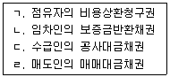
- ㄱ, ㄴ
- ㄱ, ㄷ
- ㄱ, ㄹ
- ㄴ, ㄷ
- ㄷ, ㄹ
(정답률: 알수없음)
38. 권리질권에 관한 설명으로 옳은 것은?
- 부동산의 사용을 목적으로 하는 권리도 질권의 목적이 될 수 있다.
- 질권자는 질권의 목적이 된 채권을 직접 청구할 수 없다.
- 지명채권을 목적으로 한 질권은 제3채무자에게 질권설정의 사실을 통지하여야 성립할 수 있다.
- 입질된 채권의 목적물이 금전 이외의 물건인 때에는 질권자는 그 변제를 받은 물건에 대하여 질권을 행사할 수 있다.
- 지시채권을 목적으로 한 질권의 설정은 배서없이 증서를 교부하더라도 그 효력이 생긴다.
(정답률: 알수없음)
39. 저당권에 관한 설명으로 옳은 것을 모두 고른 것은? (다툼이 있으면 판례에 따름)
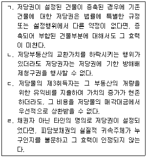
- ㄱ
- ㄷ
- ㄱ, ㄷ
- ㄴ, ㄹ
- ㄱ, ㄷ, ㄹ
(정답률: 알수없음)
40. 근저당권에 관한 설명으로 옳지 않은 것은? (다툼이 있으면 판례에 따름)
- 근저당권의 피담보채무는 원칙적으로 당사자가 약정한 존속기간이나 결산기가 도래한 때에 확정된다.
- 장래에 발생할 특정의 조건부채권을 피담보채권으로 하는 근저당권의 설정은 허용되지 않는다.
- 근저당부동산의 제3취득자는 피담보채무가 확정된 이후에 채권최고액의 범위 내에서 그 확정된 피담보채무를 변제하고 근저당권의 소멸을 청구할 수 있다.
- 근저당권자가 피담보채무의 불이행을 이유로 경매신청을 하여 경매 신청시에 근저당 채무액이 확정된 경우, 경매개시 결정 후 경매신청이 취하되더라도 채무확정의 효과가 번복되지 않는다.
- 채권최고액은 반드시 등기되어야 하지만, 근저당권의 존속기간은 필요적 등기사항이 아니다.
(정답률: 알수없음)
2과목: 경제학원론
41. 수요와 공급의 가격탄력성에 관한 설명으로 옳은 것을 모두 고른 것은?
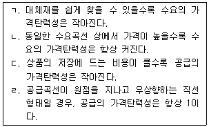
- ㄱ, ㄴ
- ㄱ, ㄷ
- ㄴ, ㄷ
- ㄴ, ㄹ
- ㄷ, ㄹ
(정답률: 알수없음)
42. 소비자 甲의 효용함수가 U=min{X+2Y, 2X+Y}이다. 甲의 소득은 150, X재의 가격은 30, Y재의 가격은 10일 때, 효용을 극대화하는 甲의 Y재 소비량은? (단, 甲은 X재와 Y재만 소비한다.)
- 0
- 2.5
- 5
- 7.5
- 15
(정답률: 알수없음)
43. 소비자 甲은 X재와 Y재만 소비하여 효용을 극대화한다. 제1기의 X재 가격은 3이고, Y재 가격은 6이었을 때, 소비조합 (X=3, Y=5)를 선택하였다. 제2기에는 동일한 소득에서 X재와 Y재의 변동된 가격 PX, PY에서 소비조합 (X=6, Y=3)을 선택하였다. 甲의 선택이 현시선호 약공리(weak axiom)를 만족하기 위한 조건은?
- 2PX ＜ 3PY
- 2PX ＞ 3PY
- 3PX ＜ 2PY
- 3PX ＞ 2PY
- 2X ＜ PY
(정답률: 알수없음)
44. 기업 A의 생산함수가 Q=min(L, 3K)이다. 생산요소 조합 (L=10, K=5)에서 노동과 자본의 한계생산은 각각 얼마인가? (단, Q는 생산량, L은 노동량, K는 자본량이다.)
- 0, 1
- 1, 0
- 1, 3
- 3, 1
- 10, 5
(정답률: 알수없음)
45. 기업의 생산기술이 진보하는 경우에 관한 설명으로 옳은 것을 모두 고른 것은?
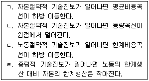
- ㄱ, ㄴ
- ㄱ, ㄷ
- ㄴ, ㄷ
- ㄴ, ㄹ
- ㄷ, ㄹ
(정답률: 알수없음)
46. 독점시장에서 기업 A의 수요함수는 P=500-2Q이고, 한계비용은 생산량에 관계없이 100으로 일정하다. 기업 A는 기술진보로 인해 한계비용이 하락하여 이윤극대화 생산량이 20단위 증가하였다. 기술진보 이후에도 한계비용은 생산량에 관계없이 일정하다. 한계비용은 얼마나 하락하였는가? (단, P는 가격, Q는 생산량이다.)
- 20
- 40
- 50
- 60
- 80
(정답률: 알수없음)
47. 기업 A와 B가 생산량 경쟁을 하는 시장수요곡선은 P=α-qA-qB로 주어졌다. 기업 A와 B는 동일한 재화를 생산하며, 평균비용은 로 일정하다. 기업 A의 목적은 이윤극대화이고, 기업 B의 목적은 손실을 보지 않는 범위 내에서 시장점유율을 극대화하는 것이다. 다음 설명 중 옳지 않은 것은? (단, P는 시장가격, qA는 기업 A의 생산량, qB는 기업 B의 생산량이며, c ＜ α이다.)
- 균형에서 시장가격은 c이다.
- 균형에서 기업 A의 이윤은 0보다 크다.
- 균형에서 기업 B의 이윤은 0이다.
- 균형에서 기업 B의 생산량이 기업 A보다 크다.
- 균형은 하나만 존재한다.
(정답률: 알수없음)
48. 단기 비용곡선에 관한 설명으로 옳은 것을 모두 고른 것은? (단, 양(+)의 고정비용과 가변비용이 소요된다.)
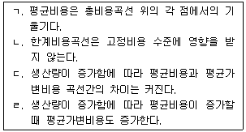
- ㄱ, ㄴ
- ㄱ, ㄹ
- ㄴ, ㄷ
- ㄴ, ㄹ
- ㄷ, ㄹ
(정답률: 알수없음)
49. 보상수요(compensated demand)에 관한 설명으로 옳지 않은 것은?
- 가격변화에서 대체효과만 고려한 수요개념이다.
- 기펜재의 보상수요곡선은 우하향하지 않는다.
- 소비자잉여를 측정하는 데 적절한 수요개념이다.
- 수직선형태 보상수요곡선의 대체효과는 항상 0이다.
- 소득효과가 0이면 통상적 수요(ordinary demand)와 일치한다.
(정답률: 알수없음)
50. 경제적 지대(economic rent)에 관한 설명으로 옳은 것을 모두 고른 것은?
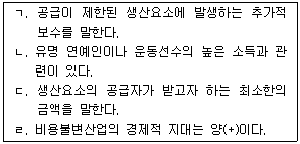
- ㄱ, ㄴ
- ㄱ, ㄷ
- ㄱ, ㄹ
- ㄴ, ㄷ
- ㄴ, ㄹ
(정답률: 알수없음)
51. 설문을 어떻게 구성하느냐에 따라 다른 응답이 나오는 효과는?
- 틀짜기효과(framing effect)
- 닻내림효과(anchoring effect)
- 현상유지편향(status quo bias)
- 기정편향(default bias)
- 부존효과(endowment effect)
(정답률: 알수없음)
52. 기업 A의 생산함수는 Q=L+3K이다. 생산량이 일정할 때, 기업 A의 한계기술대체율에 관한 설명으로 옳은 것은? (단, Q는 생산량, L은 노동량, K는 자본량, Q＞0, L＞0, K＞0 이다.)
- 노동과 자본의 투입량과 관계없이 일정하다.
- 노동 투입량이 증가하면 한계기술대체율은 증가한다.
- 노동 투입량이 증가하면 한계기술대체율은 감소한다.
- 자본 투입량이 증가하면 한계기술대체율은 증가한다.
- 자본 투입량이 증가하면 한계기술대체율은 감소한다.
(정답률: 알수없음)
53. 완전경쟁시장에서 개별기업은 U자형 평균비용곡선과 평균가변비용곡선을 가진다. 시장가격이 350일 때, 생산량 50 수준에서 한계비용은 350, 평균비용은 400, 평균가변비용은 200이다. 다음 중 옳은 것을 모두 고른 것은?
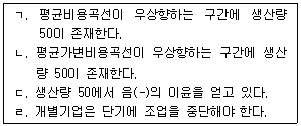
- ㄱ, ㄴ
- ㄱ, ㄷ
- ㄱ, ㄹ
- ㄴ, ㄷ
- ㄴ, ㄹ
(정답률: 알수없음)
54. 임금의 보상격차(compensating differential)에 관한 설명으로 옳지 않은 것은?
- 근무조건이 좋지 않은 곳으로 전출되면 임금이 상승한다.
- 성별 임금 격차도 일종의 보상격차이다.
- 비금전적 측면에서 매력적인 일자리는 임금이 상대적으로 낮다.
- 물가가 높은 곳에서 근무하면 임금이 상승한다.
- 더 높은 비용이 소요되는 훈련을 요구하는 직종의 임금이 상대적으로 높다.
(정답률: 알수없음)
55. 두 공장 1, 2를 운영하고 있는 기업 A의 비용함수는 각각 C1(q1)=q12, C2(q2)=2q2이다. 총비용을 최소화하여 5단위를 생산하는 경우, 공장 1, 2에서의 생산량은? (단, q1은 공장 1의 생산량, q2는 공장 2의 생산량이다.)
- q1=5, q2=0
- q1=4, q2=1
- q1=3, q2=2
- q1=2, q2=3
- q1=1, q2=4
(정답률: 알수없음)
56. 다음의 전략형 게임(strategic form game)에서 에 따라 甲과 乙의 전략 및 균형이 달라진다. 이에 관한 설명으로 옳지 않은 것은? (단, 보수 행렬의 괄호 안 첫 번째 보수는 甲, 두 번째 보수는 乙의 것이다.)
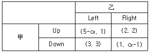
- α＜2이면, 전략 Up은 甲의 우월전략이다.
- α＞4이면, 전략 Right는 乙의 우월전략이다.
- 2＜α＜4이면, (Down, Left)는 유일한 내쉬균형이다.
- α＜2이면, (Up, Right)는 유일한 내쉬균형이다.
- α＞4이면, (Up, Right)는 유일한 내쉬균형이다.
(정답률: 알수없음)
57. 정상재 A, B의 가격이 각각 2% 상승할 때 A재의 소비지출액은 변화가 없었지만, B재의 소비지출액은 1% 감소하였다. 이 때 두 재화에 대한 수요의 가격탄력성 εA, εB에 관한 설명으로 옳은 것은? (단, εA와 εB는 절댓값으로 표시한다.)
- εA＞1, εB＞1
- εA=1, εB＞1
- εA=0, εB＜1
- εA=1, εB＜1
- εA＜1, εB＜1
(정답률: 알수없음)
58. 독점기업의 가격차별에 관한 설명으로 옳은 것은?
- 1급 가격차별 시 소비자잉여는 0보다 크다.
- 1급 가격차별 시 사중손실(deadweight loss)은 0보다 크다.
- 2급 가격차별의 대표적인 예로 영화관의 조조할인이 있다.
- 3급 가격차별 시 한 시장에서의 한계수입은 다른 시장에서의 한계수입보다 크다.
- 3급 가격차별 시 수요의 가격탄력성이 상대적으로 작은 시장에서 더 높은 가격이 설정된다.
(정답률: 알수없음)
59. A대학교 근처에는 편의점이 하나밖에 없으며, 편의점 사장에게 아르바이트 학생의 한계생산가치는 VMPL=60-3L이다. 아르바이트 학생의 노동공급이 L=ω-40이라고 하면, 균형고용량과 균형임금은 각각 얼마인가? (단, L은 노동량, ω는 임금이다.)
- 2, 42
- 4, 44
- 4, 48
- 6, 42
- 6, 46
(정답률: 알수없음)
60. 하루 24시간을 노동을 하는 시간과 여가를 즐기는 시간으로 양분할 때, 후방굴절형 노동공급곡선이 발생하는 이유는?
- 임금이 인상될 경우 여가의 가격이 노동의 가격보다 커지기 때문이다.
- 임금이 인상될 경우 노동 한 시간 공급으로 할 수 있는 것이 많아지기 때문이다.
- 여가가 정상재이고, 소득효과가 대체효과보다 크기 때문이다.
- 여가가 정상재이고, 소득효과가 대체효과와 같기 때문이다.
- 노동이 열등재이고, 소득효과가 대체효과와 같기 때문이다.
(정답률: 알수없음)
61. 현재 우리나라 채권의 연간 명목수익률이 5%이고 동일 위험을 갖는 미국 채권의 연간 명목수익률이 2.5%일 때, 현물환율이 달러당 1,200원인 경우 연간 선물환율은? (단, 이자율 평가설이 성립한다고 가정한다.)
- 1,200원/달러
- 1,210원/달러
- 1,220원/달러
- 1,230원/달러
- 1,240원/달러
(정답률: 알수없음)
62. 총수요 증가 요인으로 옳은 것을 모두 고른 것은?
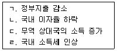
- ㄱ, ㄴ
- ㄱ, ㄷ
- ㄴ, ㄷ
- ㄴ, ㄹ
- ㄷ, ㄹ
(정답률: 알수없음)
63. 한국과 미국의 연간 물가상승률은 각각 4%와 6%이고 환율은 달러당 1,200원에서 1,260원으로 변하였다고 가정할 때, 원화의 실질환율의 변화는?
- 3% 평가절하
- 3% 평가절상
- 7% 평가절하
- 7% 평가절상
- 변화 없다.
(정답률: 알수없음)
64. 개방경제인 甲국의 국민소득 결정모형이 다음과 같을 때, 甲국의 국내총소득, 국민총소득, 처분가능소득은? (단, 제시된 항목 외 다른 것은 고려하지 않는다.)
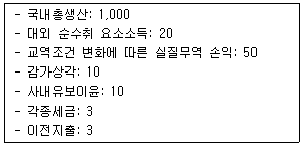
- 1,000, 980, 960
- 1,000, 1,020, 1,000
- 1,⑤0, 1,⑤0, 1,⑤0
- 1,⑤0, 1,070, 1,⑤0
- 1,070, 1,⑤0, 1,030
(정답률: 알수없음)
65. 개방경제 甲국의 국민소득 결정모형이 다음과 같다. 특정 정부지출 수준에서 경제가 균형을 이루고 있으며 정부도 균형예산을 달성하고 있을 때, 균형에서 민간저축은? (단, Y는 국민소득, C는 소비, I는 투자, G는 정부지출, T는 조세, X는 수출, M은 수입이다.)
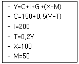
- 150
- 200
- 225
- 250
- 450
(정답률: 알수없음)
66. 피셔(I. Fisher)의 기간 간 선택(intertemporal choice)모형에서 최적소비선택에 관한 설명으로 옳은 것을 모두 고른 것은? (단, 기간은 현재와 미래이며, 현재소비와 미래소비는 모두 정상재이다. 무차별곡선은 우하향하며 원점에 대하여 볼록한 곡선이다.)
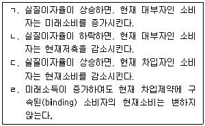
- ㄱ, ㄴ
- ㄴ, ㄷ
- ㄷ, ㄹ
- ㄱ, ㄷ, ㄹ
- ㄴ, ㄷ, ㄹ
(정답률: 알수없음)
67. 甲국의 총생산함수가 Y=AK0.4L0.6이다. 甲국 경제에 관한 설명으로 옳은 것을 모두 고른 것은? (단, Y는 생산량, A는 총요소생산성, K는 자본량, L은 노동량으로 인구와 같다.)
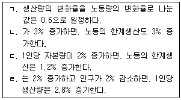
- ㄱ, ㄹ
- ㄴ, ㄷ
- ㄷ, ㄹ
- ㄱ, ㄴ, ㄹ
- ㄱ, ㄷ, ㄹ
(정답률: 알수없음)
68. 감정평가사 A의 2000년 연봉 1,000만원을 2018년 기준으로 환산한 금액은? (단, 2000년 물가지수는 40, 2018년 물가지수는 120이다.)
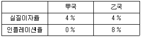
- 1,000만원
- 2,000만원
- 3,000만원
- 4,000만원
- 5,000만원
(정답률: 알수없음)
69. 甲국과 乙국의 실질이자율과 인플레이션율은 다음 표와 같다. 명목이자소득에 대해 각각 25%의 세금이 부과될 경우, 甲국과 乙국의 세후 실질이자율은 각각 얼마인가? (단, 피셔효과가 성립한다.)
- 3%, 1%
- 3%, 3%
- 3%, 9%
- 4%, 4%
- 4%, 12%
(정답률: 알수없음)
70. 리카도 대등정리(Ricardian equivalence theorem)는 정부지출의 재원조달 방식에 나타나는 변화가 민간부문의 경제활동에 아무런 영향을 주지 못한다는 것이다. 이 정리가 성립하기 위한 가정으로 옳은 것을 모두 고른 것은?
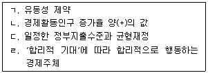
- ㄱ, ㄴ
- ㄴ, ㄷ
- ㄷ, ㄹ
- ㄱ, ㄷ, ㄹ
- ㄴ, ㄷ, ㄹ
(정답률: 알수없음)
71. 만 15세 이상 인구(생산가능인구) 1,250만명, 비경제활동인구 250만명, 취업자 900만명인 甲국의 경제활동참가율, 실업률, 고용률은?
- 80%, 10%, 72%
- 80%, 20%, 72%
- 80%, 30%, 90%
- 90%, 20%, 72%
- 90%, 20%, 90%
(정답률: 알수없음)
72. 다음 거시경제모형에서 생산물시장과 화폐시장이 동시에 균형을 이루는 소득과 이자율은? (단, C는 소비, Y는 국민소득, I는 투자, G는 정부지출, T는 조세, r은 이자율, MD는 화폐수요, MS는 화폐공급이다. 물가는 고정되어 있고, 해외부문은 고려하지 않는다.)
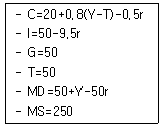
- 200, 1
- 200, 2
- 250, 1
- 300, 1
- 300, 2
(정답률: 알수없음)
73. 실질 GDP가 증가하는 경우는?
- 기존 아파트 매매가격 상승
- 주식시장의 주가 상승
- 이자율 상승
- 사과 가격의 상승
- 배 생산의 증가
(정답률: 알수없음)
74. 어느 경제에서 1년 동안 쌀만 100kg 생산되어 거래되었다고 하자. 쌀 가격은 1kg당 2만원이고 공급된 화폐량은 50만원이다. 이 경우 화폐의 유통속도는 얼마인가? (단, 화폐수량설이 성립한다.)
- 1
- 2
- 3
- 4
- 5
(정답률: 알수없음)
75. 정부가 지출을 10만큼 늘렸을 때 총수요가 10보다 적게 늘어났다. 그 이유로 옳은 것은?
- 소득변화에 따른 소비증가
- 소득변화에 따른 소비감소
- 이자율변화에 따른 투자증가
- 이자율변화에 따른 투자감소
- 그런 경우가 일어날 수 없다.
(정답률: 알수없음)
76. 명목GDP 증가율, 물가상승률, 인구증가율은 각각 연간 5%, 3%, 1%이다. 1인당 실질GDP의 증가율은?
- 1%
- 2%
- 4%
- 9%
- 10%
(정답률: 알수없음)
77. 통화공급 과정에 관한 설명으로 옳은 것을 모두 고른 것은?
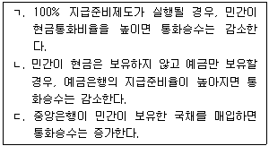
- ㄱ
- ㄴ
- ㄱ, ㄴ
- ㄱ, ㄷ
- ㄴ, ㄷ
(정답률: 알수없음)
78. 甲국은 경제활동인구가 1,000만명으로 고정되어 있으며 실업률은 변하지 않는다. 매 기간 동안, 실업자 중 새로운 일자리를 얻는 사람의 수가 47만명이고, 취업자 중 일자리를 잃는 사람의 비율(실직률)이 5%로 일정하다. 甲국의 실업률은?
- 3%
- 4%
- 4.7%
- 5%
- 6%
(정답률: 알수없음)
79. 실질화폐수요가 이자율과는 음(-)의 관계이고 실질국민소득과는 양(+)의 관계이다. 화폐시장이 균형일 때, 새로운 균형을 이루기 위한 변수들의 변화에 관한 설명으로 옳지 않은 것은? (단, 화폐시장만 고려하며, 화폐수량설이 성립한다. 명목통화량과 물가수준은 외생변수이다.)
- 물가수준이 하락하는 경우, 이자율이 변하지 않는다면 화폐유통속도도 변하지 않는다.
- 물가수준이 하락하는 경우, 이자율이 변하지 않는다면 실질국민소득은 증가한다.
- 실질국민소득이 증가하면, 화폐유통속도는 증가한다.
- 명목통화량이 감소하는 경우, 실질국민소득이 변하지 않는다면 화폐유통속도는 증가한다.
- 명목통화량이 증가하는 경우, 실질국민소득이 변하지 않는다면 이자율은 하락한다.
(정답률: 알수없음)
80. 모든 시장이 완전경쟁적인 甲국에서 대표적인 기업 A의 생산함수가 Y=4L0.5K0.5이다. 단기적으로 A의 자본량은 1로 고정되어 있다. 생산물 가격이 2이고 명목임금이 4일 경우, 이윤을 극대화하는 A의 단기 생산량은? (단, Y는 생산량, L은 노동량, K는 자본량이며, 모든 생산물은 동일한 상품이다.)
- 1
- 2
- 4
- 8
- 16
(정답률: 알수없음)
3과목: 부동산학원론
81. 토지의 특성에 관한 설명으로 옳지 않은 것은?
- 부동성은 부동산 활동 및 현상을 국지화하여 지역특성을 갖도록 한다.
- 부증성은 생산요소를 투입하여도 토지 자체의 양을 늘릴 수 없는 특성이다.
- 영속성은 토지관리의 필요성을 높여 감정평가에서 원가방식의 이론적 근거가 된다.
- 개별성은 대상토지와 다른 토지의 비교를 어렵게 하며 시장에서 상품 간 대체관계를 제약할 수 있다.
- 인접성은 물리적으로 연속되고 연결되어 있는 특성이다.
(정답률: 알수없음)
82. 전ㆍ답ㆍ임야 등의 지반이 절토되어 하천으로 변한 토지는?
- 포락지
- 유휴지
- 공한지
- 건부지
- 휴한지
(정답률: 알수없음)
83. 다음의 내용과 관련된 부동산활동상의 토지 분류에 해당하는 것은?
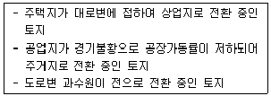
- 이행지
- 우등지
- 체비지
- 한계지
- 후보지
(정답률: 알수없음)
84. 부동산의 개념에 관한 설명으로 옳지 않은 것은?
- 토지는 제품생산에 필요한 부지를 제공하는 생산요소이다.
- 토지는 생활의 편의를 제공하는 최종 소비재이기도 하다.
- ｢민법｣상 부동산은 토지 및 그 정착물이며, 부동산 이외의 물건은 동산이다.
- 준부동산에는 등기나 등록수단으로 공시된 광업재단, 공장재단, 선박, 항공기, 어업권 등이 있다.
- ｢입목에 관한 법률｣에 의해 소유권보존등기를 한 입목은 토지와 분리하여 양도할 수 없다.
(정답률: 알수없음)
85. 토지정책에 관한 설명으로 옳은 것은?
- 토지정책수단 중 토지비축제도, 토지수용, 금융지원, 보조금 지급은 간접개입방식이다.
- 개발부담금제는 개발이 제한되는 지역의 토지소유권에서 개발권을 분리하여 개발이 필요한 다른 지역에 개발권을 양도할 수 있도록 하는 제도이다.
- 토지선매에 있어 시장ㆍ군수ㆍ구청장은 토지거래계약허가를 받아 취득한 토지를 그 이용목적대로 이용하고 있지 아니한 토지에 대해서 선매자에게 강제로 수용하게 할 수 있다.
- 개발권양도제는 개발사업의 시행으로 이익을 얻은 사업시행자로부터 개발이익의 일정액을 환수하는 제도이다.
- 토지적성평가제는 토지에 대한 개발과 보전의 경합이 발생했을 때 이를 합리적으로 조정하는 수단이다.
(정답률: 알수없음)
86. 다음의 내용에 모두 관련된 토지의 특성은?
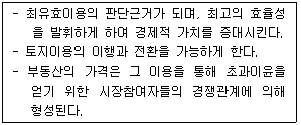
- 인접성
- 용도의 다양성
- 위치의 가변성
- 고가성
- 부동성
(정답률: 알수없음)
87. 부동산투자에서 레버리지(leverage)에 관한 설명으로 옳지 않은 것은?
- 총투자수익률에서 지분투자수익률을 차감하여 정(+)의 수익률이 나오는 경우에는 정(+)의 레버리지가 발생한다.
- 차입이자율이 총투자수익률보다 높은 경우에는 부(-)의 레버리지가 발생한다.
- 정(+)의 레버리지는 이자율의 변화 등에 따라 부(-)의 레버리지로 변화될 수 있다.
- 부채비율이 상승할수록 레버리지 효과로 인한 지분투자자의 수익률 증대효과가 있지만, 한편으로는 차입금리의 상승으로 지분투자자의 수익률 감소효과도 발생한다.
- 대출기간 연장을 통하여 기간이자 상환액을 줄이는 것은 부(-)의 레버리지 발생시 적용할 수 있는 대안 중 하나이다.
(정답률: 알수없음)
88. 부동산 수익률에 관한 설명으로 옳지 않은 것을 모두 고른 것은?
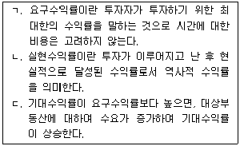
- ㄱ
- ㄷ
- ㄱ, ㄴ
- ㄱ, ㄷ
- ㄱ, ㄴ, ㄷ
(정답률: 알수없음)
89. 다음의 그림은 포트폴리오 분석을 위해 기대수익률과 위험이 다른 개별 자산1과 자산2로 포트폴리오를 구성하여, 포트폴리오 내의 상관계수별 자산비중에 따른 위험과 수익 궤적을 나타낸 것이다. 이에 관한 설명으로 옳은 것은? (단, 주어진 조건에 한함)
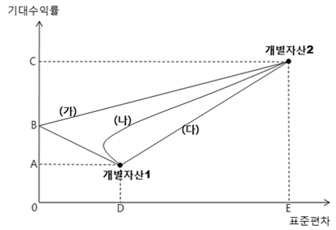
- 두 개별자산간의 상관계수가 1인 경우에는 비체계적 위험을 완전히 제거할 수 있다.
- 두 개별자산간의 상관계수가 -1인 경우에는 체계적 위험을 완전히 제거할 수 있다.
- 두 개별자산간의 상관계수가 0인 경우의 위험과 수익 궤적을 나타낸 선은 (다)이다.
- 두 개별자산간의 상관계수가 1인 경우에는 체계적 위험을 완전히 제거할 수 있다.
- 두 개별자산간의 상관계수가 -1인 경우의 위험과 수익 궤적을 나타낸 선은 (가)이다.
(정답률: 알수없음)
90. 다음은 A부동산 투자에 따른 1년간 예상 현금흐름이다. 운영경비율(OER)과 부채감당률(DCR)을 순서대로 나열한 것은? (단, 주어진 조건에 한함)
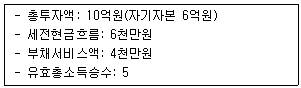
- 0.5, 0.4
- 0.5, 2.5
- 2.0, 0.4
- 2.0, 2.0
- 2.0, 2.5
(정답률: 알수없음)
91. 고정금리대출과 변동금리대출에 관한 설명으로 옳은 것은?
- 예상치 못한 인플레이션이 발생할 경우 대출기관에게 유리한 유형은 고정금리대출이다.
- 일반적으로 대출일 기준 시 이자율은 변동금리대출이 고정금리대출보다 높다.
- 시장이자율 하락 시 고정금리대출을 실행한 대출기관은 차입자의 조기상환으로 인한 위험이 커진다.
- 변동금리대출은 시장상황에 따라 이자율을 변동시킬 수 있으므로 기준금리 외에 가산금리는 별도로 고려하지 않는다.
- 변동금리대출의 경우 시장이자율 상승 시 이자율 조정주기가 짧을수록 대출기관에게 불리하다.
(정답률: 알수없음)
92. 부동산투자분석에 관한 설명으로 옳지 않은 것은?
- 순현재가치는 장래 예상되는 현금유입액과 현금유출액의 현재가치를 차감한 금액이다.
- 내부수익률은 장래 예상되는 현금유입액과 현금유출액의 현재가치를 같게 하는 할인율이다.
- 회수기간법은 투자안 중에서 회수기간이 가장 단기인 투자안을 선택하는 방법이다.
- 순현가법, 내부수익률법, 수익성지수법은 현금흐름을 할인하여 투자분석을 하는 방법이다.
- 순현재가치가 1보다 큰 경우나 내부수익률이 요구수익률보다 큰 경우에는 투자하지 않는다.
(정답률: 알수없음)
93. 대출조건이 다음과 같을 때, 원금균등분할상환방식과 원리금균등분할상환방식에서 1회차에 납부할 원금을 순서대로 나열한 것은? (단, 주어진 조건에 한함)
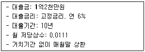
- 1,000,000원, 725,000원
- 1,000,000원, 732,000원
- 1,000,000원, 735,000원
- 1,200,000원, 732,000원
- 1,200,000원, 735,000원
(정답률: 알수없음)
94. 부동산 증권에 관한 설명으로 옳지 않은 것은?
- 자산유동화증권(ABS)은 금융기관 및 기업이 보유하고 있는 매출채권, 부동산저당채권 등 현금흐름이 보장되는 자산을 담보로 발행하는 증권을 의미한다.
- 저당담보부채권(MBB)은 모기지풀에서 발생하는 현금흐름과 관련된 위험을 투자자에게 이전하는 채권이다.
- 주택저당증권(MBS)은 금융기관 등이 주택자금을 대출하고 취득한 주택저당채권을 유동화전문회사 등이 양수하여 이를 기초로 발행하는 증권을 의미한다.
- 저당이체증권(MPTS)은 발행기관이 원리금수취권과 주택저당권에 대한 지분권을 모두 투자자에게 이전하는 증권이다.
- 다계층증권(CMO)은 저당채권의 발행액을 몇 개의 계층으로 나눈 후 각 계층마다 상이한 이자율을 적용하고 원금이 지급되는 순서를 다르게 정할 수 있다.
(정답률: 알수없음)
95. 사업주가 특수목적회사인 프로젝트 회사를 설립하여 특정 프로젝트 수행에 필요한 자금을 금융기관으로부터 대출받는 방식의 프로젝트 금융을 활용하는 경우에 관한 설명으로 옳지 않은 것은? (단, 프로젝트 회사를 위한 별도의 보증이나 담보제공 등은 없음)
- 대규모 자금이 소요되고 공사기간이 장기인 사업에 적합한 자금조달수단이다.
- 프로젝트 금융에 의한 채무는 사업주와 독립적이므로 부채상환의무가 사업주에게 전가되지 않는다.
- 사업주가 이미 대출한도를 넘어섰거나 대출제약요인이 있는 경우에도 가능하다.
- 해당 프로젝트가 부실화되더라도 대출기관의 채권회수에는 영향이 없다.
- 프로젝트 회사는 법률적, 경제적으로 완전히 독립적인 회사이지만 이해당사자간의 이견이 있을 경우에는 사업지연을 초래할 수 있다.
(정답률: 알수없음)
96. 주택자금대출을 위한 다음과 같은 대안에 관한 설명으로 옳은 것은? (단, 주어진 조건에 한함)
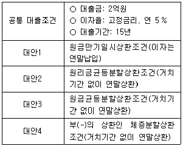
- 모든 대안별 대출금액에 대한 상환방식은 다르지만, 첫째년도에 지불하는 이자금액은 모든 대안이 동일하다.
- 모든 대안의 대출기간 동안에 상환한 원금과 이자의 총합계액은 동일하다.
- 대안4는 다른 대안에 비해서 대출기간이 경과할수록 이자부담이 점증하는 구조이기에 원금부담은 줄어든다.
- 대안2는 대안3에 비해서 첫째년도의 원금상환액이 큰 방식이다.
- 대안3은 다른 대안에 비해서 첫째년도에 차입자의 원리금지급 부담이 큰 방식이다.
(정답률: 알수없음)
97. 다음 부동산 관련 조세 중 국세만으로 묶인 것은?
- 상속세, 취득세, 양도소득세
- 증여세, 등록면허세, 양도소득세
- 취득세, 등록면허세, 종합부동산세
- 증여세, 양도소득세, 종합부동산세
- 재산세, 양도소득세, 종합부동산세
(정답률: 알수없음)
98. 부동산조세에 관한 설명으로 옳지 않은 것은? (단, 주어진 조건에 한함)
- 종합부동산세와 재산세의 과세대상은 일치한다.
- 조세의 귀착 문제는 수요와 공급의 상대적 탄력성에 달려 있다.
- 임대주택에 재산세가 강화되면 장기적으로 임차인에게 전가될 수 있다.
- 부동산조세는 자원을 재분배하는 기능이 있다.
- 택에 보유세가 중과되면 자가소유 수요가 감소할 수 있다.
(정답률: 알수없음)
99. 지역분석과 개별분석에 관한 설명으로 옳은 것은?
- 지역분석은 일반적으로 개별분석에 선행하여 행하는 것으로 그 지역 내의 최유효이용을 판정하는 것이다.
- 인근지역이란 대상부동산이 속한 지역으로 부동산의 이용이 동질적이고 가치형성요인 중 개별요인을 공유하는 지역이다.
- 유사지역이란 대상부동산이 속하지 아니하는 지역으로서 인근지역과 유사한 특성을 갖는 지역이다.
- 개별분석이란 지역분석의 결과로 얻어진 정보를 기준으로 대상부동산의 가격을 표준화ㆍ일반화시키는 작업을 말한다.
- 지역분석 시에는 균형의 원칙에, 개별분석 시에는 적합의 원칙에 더 유의하여야 한다.
(정답률: 알수없음)
100. 감정평가에 관한 규칙상 가치에 관한 설명으로 옳지 않은 것은?
- 대상물건에 대한 감정평가액은 시장가치를 기준으로 결정하는 것을 원칙으로 한다.
- 법령에 다른 규정이 있는 경우에는 시장가치 외의 가치를 기준으로 감정평가 할 수 있다.
- 대상물건의 특성에 비추어 사회통념상 필요하다고 인정되는 경우에는 시장가치 외의 가치를 기준으로 감정평가 할 수 있다.
- 시장가치란 대상 물건이 통상적인 시장에서 충분한 기간 방매된 후 매수인에 의해 제시된 것 중에서 가장 높은 가격을 말한다.
- 감정평가 의뢰인이 요청하여 시장가치 외의 가치로 감정평가하는 경우에는 해당 시장가치 외의 가치의 성격과 특징을 검토하여야 한다.
(정답률: 알수없음)
101. 다음의 자료를 활용하여 평가한 A부동산의 연간 비준임료(원/m2)는? (단, 주어진 조건에 한함)
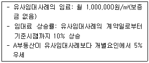
- 13,200,000
- 13,540,000
- 13,560,000
- 13,800,000
- 13,860,000
(정답률: 알수없음)
102. 최유효이용에 관한 설명으로 옳지 않은 것은?
- 토지이용흡수율 분석은 경제적 타당성 여부판단에 활용되지 않는다.
- 인근지역의 용도와는 전혀 다른 데도 불구하고 최유효이용이 되는 경우가 있다.
- 중도적 이용에 할당되고 있는 부동산을 평가할 때는 토지와 개량물을 같은 용도로 평가해야 한다.
- 단순히 최고의 수익을 창출하는 잠재적 용도가 아니라 적어도 그 용도에 대한 유사부동산의 시장수익률과 동등 이상의 수준이 되어야 한다.
- 투기적 목적으로 사용되고 있는 토지에 대한 최유효이용분석에 있어서는 특정한 용도를 미리 상정해서는 안되며 미래 사용에 대한 일반적 유형을 상정해야 한다.
(정답률: 알수없음)
103. 자본환원율에 관한 설명으로 옳지 않은 것은?
- 자본환원율이란 대상부동산이 장래 산출할 것으로 기대되는 표준적인 순영업소득과 부동산 가격의 비율이다.
- 감가상각 전의 순영업소득으로 가치를 추계하는 경우 감가상각률을 제외한 자본환원율을 사용해야 한다.
- 할인현금흐름분석법에서는 별도로 자본회수율을 계산하지 않는다.
- 부채감당법에 의한 자본환원율은 부채감당률에 저당비율과 저당상수를 곱하여 구한다.
- 지분수익률은 매기간 세전현금수지의 현가와 기말지분복귀액의 현가의 합을 지분투자액과 같게 만드는 내부수익률이다.
(정답률: 알수없음)
104. 감정평가에 관한 규칙상 시산가액 조정에 관한 설명으로 옳지 않은 것은?
- 평가대상물건별로 정한 감정평가방법을 적용하여 산정한 가액을 시산가액이라 한다.
- 평가대상물건의 시산가액은 감정평가 3방식 중 다른 감정평가방식에 속하는 하나 이상의 감정평가방법으로 산정한 시산가액과 비교하여 합리성을 검토하여야 한다.
- 시산가액 조정시 공시지가기준법과 거래사례비교법은 같은 감정평가방식으로 본다.
- 대상물건의 특성 등으로 인하여 다른 감정평가방법을 적용하는 것이 곤란하거나 불필요한 경우에는 시산가액 조정을 생략할 수 있다.
- 산출한 시산가액의 합리성이 없다고 판단되는 경우에는 주된 방법 및 다른 감정평가방법으로 산출한 시산가액을 조정하여 감정평가액을 결정할 수 있다.
(정답률: 알수없음)
1⑤. 다음의 조건을 가진 A부동산에 관한 설명으로 옳지 않은 것은? (단, 주어진 조건에 한함)
- 유효총소득은 연 9천만원이다.
- 순영업소득은 연 6천3백만원이다.
- 자본환원율은 연 4%이다.
- 수익가격은 15억원이다.
- 운영경비는 연 2천7백만원이다.
(정답률: 알수없음)
106. 주거분리와 여과과정에 관한 설명으로 옳지 않은 것은?
- 저가주택이 수선되거나 재개발되어 상위계층의 사용으로 전환되는 것을 상향여과라 한다.
- 민간주택시장에서 저가주택이 발생하는 것은 시장이 하향여과작용을 통해 자원할당기능을 원활하게 수행하고 있기 때문이다.
- 주거입지는 침입과 천이현상으로 인해 변화할 수 있다.
- 주거분리는 도시 전체에서 뿐만 아니라 지리적으로 인접한 근린지역에서도 발생할 수 있다.
- 하향여과는 고소득층 주거지역에서 주택의 개량을 통한 가치상승분이 주택개량비용보다 큰 경우에 발생한다.
(정답률: 알수없음)
107. 부동산시장에 관한 설명으로 옳지 않은 것은? (단, 주어진 조건에 한함)
- 부동산시장은 단기적으로 수급조절이 쉽지 않기 때문에 가격의 왜곡이 발생할 가능성이 높다.
- 부동산의 공급이 탄력적일수록 수요증가에 따른 가격변동의 폭이 크다.
- 취득세의 강화는 수급자의 시장진입을 제한하여 시장의 효율성을 저해한다.
- 토지이용 규제로 인한 택지공급의 비탄력성은 주택공급의 가격탄력성을 비탄력적으로 하는 요인 중 하나이다.
- 주택시장에서 시장균형가격보다 낮은 수준의 가격상한규제는 장기적으로 민간주택 공급량을 감소시킨다.
(정답률: 알수없음)
108. A지역 임대아파트의 시장수요함수가
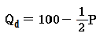
이고, 시장공급함수는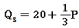
이다. 정부가 임대료를 시장균형임대료에서 36만원을 낮추었을 경우 A지역 임대아파트의 초과수요량은? (단,Qd : 수요량, Qs : 공급량, P: 임대료, 단위는 천호 및 만원이고, 다른 조건은 불변임)- 30천호
- 32천호
- 40천호
- 52천호
- 70천호
(정답률: 알수없음)
109. 우리나라의 부동산정보 관리정책에 관한 설명으로 옳은 것은?
- 부동산거래 계약과 신고 등에 관한 정보체계 구축의 법적 근거는 ｢공간정보의 구축 및 관리 등에 관한 법률｣이다.
- 국토교통부장관 또는 시장ㆍ군수ㆍ구청장은 정보의 관리를 위하여 관계 행정기관이나 그 밖에 필요한 기관에 필요한 자료를 요청할 수 있으며, 이 경우 관계 행정기관 등은 특별한 사유가 없으면 요청에 따라야 한다.
- 광역시장ㆍ도지사는 적절한 부동산정책의 수립 및 시행을 위하여 부동산 거래상황, 외국인 부동산 취득현황, 부동산 가격 동향 등에 관한 정보를 종합적으로 관리하고, 이를 관련 기관ㆍ단체 등에 제공해야 한다.
- 광역시장ㆍ도지사는 효율적인 정보의 관리 및 국민편의 증진을 위하여 대통령령으로 정하는 바에 따라 부동산거래의 계약ㆍ신고ㆍ허가ㆍ관리 등의 업무와 관련된 정보체계를 구축ㆍ운영해야 한다.
- 국토교통부장관은 정보체계에 구축되어 있는 정보를 수요자에게 제공할 수 있으며, 이 경우 제공하는 정보의 종류와 내용을 제한할 수 없다.
(정답률: 알수없음)
110. 개업공인중개사의 금지행위에 해당하지 않는 것은?
- 경매대상 부동산의 권리분석 및 취득을 알선하는 행위
- 중개대상물의 매매를 업으로 하는 행위
- 중개의뢰인과 직접 거래를 하거나 거래당사자 쌍방을 대리하는 행위
- 당해 중개대상물의 거래상의 중요사항에 관하여 거짓된 언행 그 밖의 방법으로 중개의뢰인의 판단을 그르치게 하는 행위
- 중개사무소의 개설등록을 하지 아니하고 중개업을 영위하는 자인 사실을 알면서 그를 통하여 중개를 의뢰받는 행위
(정답률: 알수없음)
111. 민간투자사업의 추진방식에 관한 설명으로 옳지 않은 것은?
- 사회기반시설의 준공과 동시에 해당 시설의 소유권이 국가 또는 지방자치단체에 귀속되며, 사업시행자에게 일정기간의 시설관리운영권을 인정하는 방식을 BTO방식이라고 한다.
- 사회기반시설의 준공과 동시에 해당 시설의 소유권이 국가 또는 지방자치단체에 귀속되며, 사업시행자에게 일정기간의 시설관리운영권을 인정하되, 그 시설을 국가 또는 지방자치단체 등이 협약에서 정한 기간 동안 임차하여 사용ㆍ수익하는 방식을 BTL방식이라고 한다.
- 사회기반시설의 준공 후 일정기간 동안 사업시행자에게 해당 시설의 소유권이 인정되며 그 기간이 만료되면 시설소유권이 국가 또는 지방자치단체에 귀속되는 방식을 BOT방식이라고 한다.
- BTO방식은 초등학교 교사 신축사업에 적합한 방식이다.
- BTL방식은 사업시행자가 최종수요자에게 사용료를 직접 부과하기 어려운 경우 적합한 방식이다.
(정답률: 알수없음)
112. 부동산관리방식에 관한 설명으로 옳지 않은 것은?
- 자기관리방식은 소유자가 직접 관리하는 방식으로 단독주택이나 소형빌딩과 같은 소규모 부동산에 주로 적용된다.
- 위탁관리방식은 부동산관리 전문업체에 위탁해 부동산을 관리하는 방식으로 대형건물의 관리에 유용하다.
- 혼합관리방식은 관리 업무 모두를 위탁하지 않고 필요한 부분만 따로 위탁하는 방식이다.
- 자기관리방식은 전문성 결여의 가능성이 높으나 신속하고 종합적인 운영관리가 가능하다.
- 위탁관리방식은 관리 업무의 전문성과 효율성을 제고할 수 있으며 기밀유지의 장점이 있다.
(정답률: 알수없음)
113. 부동산개발의 시장위험에 해당하지 않는 것은? (단, 다른 조건은 불변임)
- 이자율 상승
- 행정인허가 불확실성
- 공실률 증가
- 공사자재 가격급등
- 임대료 하락
(정답률: 알수없음)
114. 워포드(L. Wofford)의 부동산개발 7단계의 순서로 올바르게 나열한 것은?
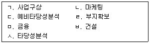
- ㄱ-ㄴ-ㄷ-ㄹ-ㅅ-ㅁ-ㅂ
- ㄱ-ㄴ-ㄷ-ㅅ-ㅁ-ㄹ-ㅂ
- ㄱ-ㄷ-ㄴ-ㅅ-ㄹ-ㅁ-ㅂ
- ㄱ-ㄷ-ㄹ-ㅅ-ㅁ-ㅂ-ㄴ
- ㄱ-ㄹ-ㄷ-ㅁ-ㅅ-ㅂ-ㄴ
(정답률: 알수없음)
115. 부동산개발의 개념에 관한 설명으로 옳지 않은 것은?
- ｢부동산개발업의 관리 및 육성에 관한 법률｣상 부동산개발은 시공을 담당하는 행위를 포함한다.
- 부동산개발은 온전하게 운용할 수 있는 부동산을 생산하기 위한 토지와 개량물의 결합이다.
- 부동산개발이란 인간에게 생활, 일, 쇼핑, 레저 등의 공간을 제공하기 위한 토지, 노동, 자본 및 기업가적 능력의 결합과정이다.
- 부동산개발은 토지조성활동과 건축활동을 포함한다.
- 부동산개발은 토지 위에 건물을 지어 이익을 얻기 위해 일정 면적의 토지를 이용하는 과정이다.
(정답률: 알수없음)
116. 부동산마케팅 전략에 관한 설명으로 옳은 것은?
- 시장점유마케팅전략은 AIDA원리에 기반을 두면서 소비자의 욕구를 파악하여 마케팅효과를 극대화하는 전략이다.
- 고객점유마케팅전략은 공급자 중심의 마케팅 전략으로 표적시장을 선정하거나 틈새시장을 점유하는 전략이다.
- 관계마케팅전략은 생산자와 소비자의 지속적인 관계를 통해서 마케팅효과를 도모하는 전략이다.
- STP전략은 시장세분화(Segmentation), 표적시장 선정(Targeting), 판매촉진(Promotion)으로 구성된다.
- 4P-Mix전략은 제품(Product), 가격(Price), 유통경로(Place), 포지셔닝(Positioning)으로 구성된다.
(정답률: 알수없음)
117. 부동산 중개계약에 관한 설명으로 옳은 것은?
- 순가중개계약은 중개의뢰인이 다수의 개업공인중개사에게 의뢰하는 계약의 형태이다.
- 독점중개계약을 체결한 개업공인중개사는 자신이 거래를 성립시키지 않았을 경우 중개보수를 받지 못한다.
- 전속중개계약을 체결한 개업공인중개사는 누가 거래를 성립시켰는지에 상관없이 중개보수를 받을 수 있다.
- 공동중개계약은 다수의 개업공인중개사가 상호 협동하여 공동으로 중개 역할을 하는 것이다.
- 일반중개계약은 거래가격을 정하여 개업공인중개사에게 제시하고, 이를 초과한 가격으로 거래가 이루어진 경우 그 초과액을 개업공인중개사가 중개보수로 획득하는 방법이다.
(정답률: 알수없음)
118. 컨버스(P. Converse)의 분기점모형에 따르면 상권은 거리의 제곱에 반비례하고 인구에 비례한다. 다음의 조건에서 A, B 도시의 상권 경계지점은 A시로부터 얼마나 떨어진 곳에 형성되는가? (단, 주어진 조건에 한함)
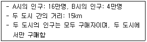
- 8km
- 9km
- 10km
- 11km
- 12km
(정답률: 알수없음)
119. 지대이론 및 도시공간구조이론에 관한 설명으로 옳지 않은 것은?
- 리카도(D. Ricardo)는 비옥한 토지의 희소성과 수확체감의 법칙으로 인해 지대가 발생한다고 보았다.
- 마샬(A. Marshall)은 일시적으로 토지와 유사한 성격을 가지는 생산요소에 귀속되는 소득을 준지대로 보았다.
- 알론소(W. Alonso)는 각 토지의 이용은 최고의 지대지불의사가 있는 용도에 할당된다고 보았다.
- 호이트(H. Hoyt)는 저급주택지가 고용기회가 많은 도심지역과의 교통이 편리한 지역에 선형으로 입지한다고 보았다.
- 해리스(C. Harris)와 울만(E. Ullman)은 도시 내부의 토지이용이 단일한 중심이 아니라 여러 개의 전문화된 중심으로 이루어진다고 보았다.
(정답률: 알수없음)
120. 자산 A, B, C에 대한 경제상황별 예상수익률이 다음과 같을 때, 이에 관한 설명으로 옳지 않은 것은? (단, 호황과 불황의 확률은 같음)
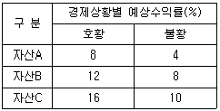
- 기대수익률은 자산C가 가장 높고, 자산A가 가장 낮다.
- 합리적인 투자자라면 자산A와 자산B 중에서는 자산B를 투자안으로 선택한다.
- 평균분산지배원리에 따르면 자산C가 자산B를 지배한다.
- 자산B의 변동계수(Coefficient of variation)는 0.2이다.
- 자산C가 상대적으로 다른 자산에 비해서 위험이 높다.
(정답률: 알수없음)